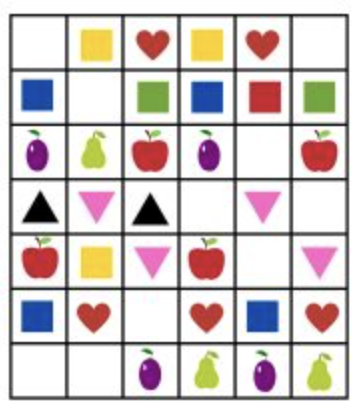

Matematyka > Wzory, kody i symetria > Powtarzanie i kontynuowanie wzorów >
Wzory, kody i symetria
🎨 Powtarzanie i kontynuowanie wzorów
(Повторение и продолжение узоров — rozpoznajemy i tworzymy rytmy)
📍 Co to są wzory?
- Wzory to powtarzające się elementy, np. kolory, kształty lub liczby.
- Mogą wyglądać jak rytm — coś co się powtarza.
✏️ Jak rozpoznawać wzory?
-
Как распознавать узоры?
- Zwracamy uwagę, co się powtarza i w jakiej kolejności.
- Na przykład: czerwony, niebieski, czerwony, niebieski — to jest wzór.

🧩 Jak kontynuować wzory?
-
Как продолжать узоры?
- Trzeba dopasować kolejne elementy tak, aby pasowały do schematu powtarzania.
- Jeśli wzór to: kwadrat, koło, kwadrat, koło — następny będzie kwadrat.
📐 Przykłady wzorów
- 🔴🔵🔴🔵 — co będzie dalej? 🔴
- ▲ ■ ▲ ■ — co będzie dalej? ▲
- 2, 4, 2, 4, 2 — co będzie dalej? 4
💡 Ciekawostka!
- Wzory możemy znaleźć w naturze — np. paski na zebrach lub liściach.
- Tworzenie wzorów to świetna zabawa i pomaga ćwiczyć uwagę.